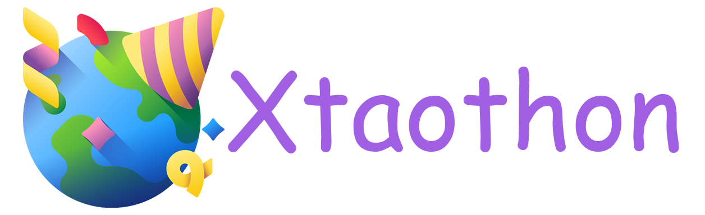

简介
快速开始
安装指南
开始
授权
调用方法
处理消息
API
客户端
可用方法
可用类型
绑定方法
消息更新处理器
主题指南
SOCKS5 Proxy
文本格式
更多
FAQ
常见短语
支持 Xtaothon
xtaothon
Docs
»
索引
索引
A
|
B
|
C
|
D
|
E
|
F
|
G
|
H
|
I
|
M
|
N
|
P
|
R
|
S
|
U
A
API
API key
B
Bot API
C
Callback
channel (telethon.tl.types 中的类)
chat (telethon.tl.types 中的类)
Client (telethon 中的类)
D
DC
delete() (telethon.tl.types.message 方法)
delete_messages() (telethon.Client 方法)
disconnect() (telethon.Client 方法)
download_media() (telethon.Client 方法)
E
edit() (telethon.tl.types.message 方法)
edit_message() (telethon.Client 方法)
F
forward_messages() (telethon.Client 方法)
forward_to() (telethon.tl.types.message 方法)
G
get_entity() (telethon.Client 方法)
get_input_entity() (telethon.Client 方法)
get_me() (telethon.Client 方法)
get_messages() (telethon.Client 方法)
H
Handler
I
iter_messages() (telethon.Client 方法)
M
mark_read() (telethon.tl.types.message 方法)
message (telethon.tl.types 中的类)
N
NewMessage (telethon.events 中的类)
P
pin() (telethon.tl.types.message 方法)
pin_message() (telethon.Client 方法)
R
reply() (telethon.tl.types.message 方法)
RPC
RPCError
S
send_file() (telethon.Client 方法)
send_message() (telethon.Client 方法)
send_read_acknowledge() (telethon.Client 方法)
Session
start() (telethon.Client 方法)
U
unpin() (telethon.tl.types.message 方法)
unpin_message() (telethon.Client 方法)
user (telethon.tl.types 中的类)
Userbot